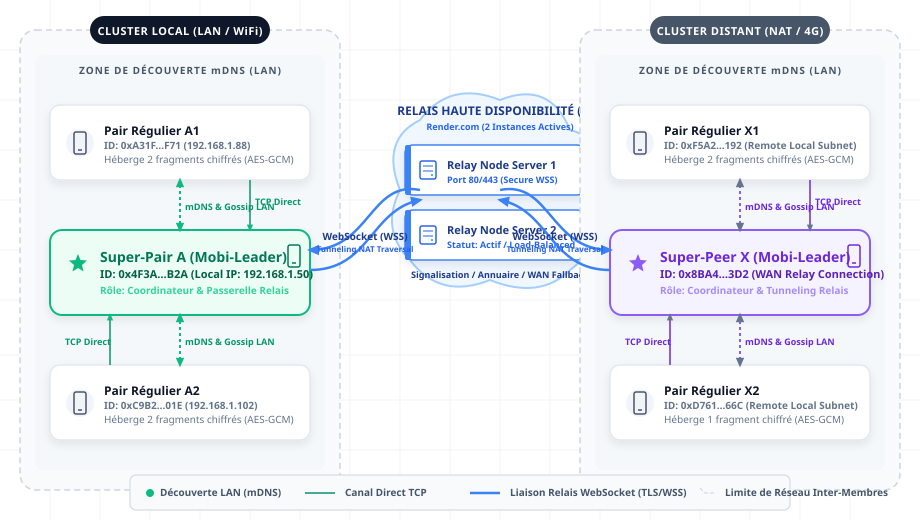

Chapter 5 — Implementation & Realization
5.1 Introduction
[To be written]
5.2 Development Environment
5.2.1 Hardware Configuration
Test Cluster — Android Devices
The validation of the system required a physical cluster of mobile devices to simulate real distributed storage conditions. Tests were conducted on clusters of three to five physical Android devices, depending on the scenario, in order to validate the minimum reconstruction quorum of $K = 3$ data fragments under various failure conditions. Additional nodes were simulated using Android emulators running API level 33 to extend the cluster size without requiring additional physical hardware.
The physical devices used included models from the Google Pixel 6/7 and Samsung Galaxy S21 families, representing a range of hardware capabilities typical of mid-to-high-end Android smartphones. The minimum hardware profile across all test devices was 6 GB of RAM, Android 12 (API level 31), and at least 100 MB of available internal storage allocated to the system for fragment hosting.
Development Machine
The development and build environment ran on a workstation equipped with Windows 11 Pro, an Intel Core i7 or AMD Ryzen 7 processor, and a minimum of 16 GB of RAM. The elevated memory requirement was necessary to run Android Studio alongside multiple Android emulator instances simultaneously without performance degradation.
5.2.2 Software & Tools
Integrated Development Environment
The application was developed using Android Studio Iguana (version 2023.2.1), the official IDE for Android development, with Kotlin 1.9.x as the primary programming language. Kotlin was chosen for its null safety, coroutine support, and full interoperability with the Android SDK and the Java Native Interface required for NDK integration.
Android SDK Configuration
| Parameter | Value | Justification |
|---|---|---|
| Compile SDK | 34 (Android 14) | Access to the latest platform APIs and security improvements |
| Target SDK | 34 (Android 14) | Compliance with current Google Play requirements |
| Minimum SDK | 26 (Android 8.0 Oreo) | Required for robust Android Keystore hardware-backed key generation and modern network security APIs |
The minimum SDK level of 26 was selected deliberately. Android 8.0 introduced stable support for hardware-backed key attestation via the Android Keystore, which is a foundational requirement for the system's identity and cryptographic security model. Setting the minimum below this level would require fallback implementations that cannot guarantee hardware-level key isolation.
Android NDK
The Native Development Kit (NDK), version 26.1.10909125, was used to integrate a native C++ implementation of the Reed-Solomon encoding and decoding algorithm. The decision to delegate this computation to native code rather than implementing it in Kotlin was driven by performance constraints: Erasure Coding involves intensive Galois Field arithmetic over large data blocks, and executing this workload on the Android Runtime (ART) would introduce unacceptable latency and battery drain during file upload and retrieval operations. The NDK bridge allows the computation to run at native speed while remaining callable from the Kotlin application layer via the Java Native Interface (JNI).
Relay Server
The relay server was implemented using Ktor 2.3.x, a Kotlin-native asynchronous server framework, providing the signaling and NAT traversal fallback functionality described in the system design. During the development phase, the server was deployed locally in a Docker container to enable rapid iteration without external network dependencies. For inter-network and cross-cluster testing, the server was deployed on a Virtual Private Server (VPS) with a public IP address, allowing physical devices on different networks to discover and communicate with each other through the relay.
Development & Analysis Tools
| Tool | Purpose |
|---|---|
| Git | Source code versioning and branch management |
| Wireshark / Fiddler | Packet-level analysis of WebSocket frame inspection and relay traffic |
| Postman | Testing and validation of the relay server's REST signaling API |
| Android Profiler | Real-time measurement of CPU, memory, and battery consumption during Erasure Coding operations |
5.3 Technology Stack
5.3.1 Mobile Application
The Android application is built on a carefully selected set of libraries that reflect the architectural constraints of a distributed mobile system: asynchronous by nature, battery-conscious, and requiring clean separation between the P2P logic and the Android framework.
User Interface
The user interface is built with Jetpack Compose 1.5.x [1], Android's modern declarative UI toolkit, styled with Material Design 3 (M3) [2]. The declarative paradigm was chosen for its natural alignment with reactive state management: the UI reacts directly to changes in the distributed system state — such as a new peer joining or a fragment repair completing — without requiring manual view updates.
Dependency Injection
Dagger Hilt 2.48+ [3] is used for dependency injection throughout the application. In the context of a distributed system, where components such as the peer discovery service, the Gossip scheduler, and the liveness monitor have distinct and carefully managed lifecycles, Hilt provides a structured mechanism for scoping dependencies correctly and decoupling components for independent testability.
Local Persistence
Room 2.6.x [4] serves as the local database layer, mapping the entities of the data model described in Chapter 4 to an SQLite database. The schema has undergone 18 versioned migrations during development, managed through Room's automatic migration support, which ensures that existing data is preserved across application updates without manual migration scripts.
Asynchrony and Reactive Programming
Kotlin Coroutines 1.7.x and Flow [5] form the concurrency backbone of the application. The Gossip synchronization loop, the heartbeat broadcaster, the liveness monitoring cycle, and all network I/O operations run as structured coroutines, allowing the system to handle dozens of concurrent distributed tasks without blocking the main thread or creating unmanaged thread pools. Flow is used extensively to propagate real-time state changes — such as peer availability updates and catalog modifications — from the data layer to the UI layer reactively.
Networking
Two complementary libraries handle network communication. OkHttp 4.12.x [6] manages the persistent WebSocket connections to the relay server, providing built-in support for reconnection, ping/pong keepalive frames, and TLS. Retrofit 2.9.x [7] is used for the REST API calls to the relay server's signaling endpoints, offering a type-safe interface over HTTP with automatic serialization and error handling.
Serialization
Kotlinx Serialization 1.6.x [8] is used for all message encoding and decoding between peers, in Protocol Buffers binary format via a thin MobiCloudProtoBuf wrapper. The binary format was preferred over JSON to reduce packet size on the hot discovery loop and to improve decode performance on battery-constrained devices. JSON parsing is reserved for relay server REST responses, where human-readable payloads are an operational convenience.
| Library | Version | Role |
|---|---|---|
| Jetpack Compose | 1.5.x | Declarative UI framework |
| Material Design 3 | — | UI component styling |
| Dagger Hilt | 2.48+ | Dependency injection |
| Room | 2.6.x | Local SQLite persistence |
| Kotlin Coroutines | 1.7.x | Structured concurrency |
| Kotlin Flow | 1.7.x | Reactive state propagation |
| OkHttp | 4.12.x | WebSocket client |
| Retrofit | 2.9.x | REST API client |
| Kotlinx Serialization | 1.6.x | Message serialization |
5.3.2 Native Layer
The Reed-Solomon encoding and decoding engine is implemented in C++ and compiled into a single shared library (librs-native.so) using CMake via the Android NDK [10]. The implementation is based on a port of the Backblaze Reed-Solomon library [9], a production-grade open-source implementation that uses precomputed logarithm and anti-logarithm tables to perform Galois Field GF(256) arithmetic efficiently, avoiding the cost of runtime field element computation.
The JNI bridge is exposed through a Kotlin class (ErasureCodec) that declares native methods for encoding and decoding operations. Both methods accept and return DirectByteBuffer instances — a critical design decision that allows the JVM and the native C++ layer to share the same memory region without copying data across the language boundary. For large files divided into multiple fragments, this zero-copy approach can eliminate several hundred milliseconds of memory transfer overhead per operation, which is significant on battery-constrained mobile hardware.
Kotlin (ErasureCodec)
↓
↓ encode(data: DirectByteBuffer, k: Int, n: Int): DirectByteBuffer
↓ decode(fragments: DirectByteBuffer, k: Int): DirectByteBuffer
↓
JNI Bridge (librs-native.so)
↓
↓
C++ Reed-Solomon Engine (Backblaze port, GF(256) log tables)
5.3.3 Relay Server
The relay server is implemented using Ktor 2.3.x [11], a Kotlin-native asynchronous server framework. The decision to use Ktor rather than a Java-based alternative reflects a deliberate architectural choice: maintaining a single language ecosystem across both the mobile client and the server reduces friction in shared data model definitions, serialization logic, and development tooling.
The server exposes a WebSocket endpoint for persistent peer connections, managed through the Ktor WebSockets plugin. Connected Super-Peers maintain permanent WebSocket sessions with the relay, which serves as the single transport channel for all inter-node communication: signaling, block upload, block download, and Gossip propagation all transit through this WebSocket connection. There is no direct peer-to-peer channel — every message between nodes is routed through the relay, which eliminates NAT traversal issues entirely and simplifies the security boundary to a single point. The server also exposes a REST API for stateless operations:
| Endpoint | Method | Description |
|---|---|---|
/v1/auth/join |
POST | Initial device authentication and cluster identifier assignment |
/v1/cluster/{id}/members |
GET | Retrieval of the current active peer list for a given cluster |
/v1/signaling/offer |
POST | Peer-to-peer connection initiation for devices beyond the local network |
/v1/inter-cluster/hosts |
GET | Discovery of available storage nodes in remote clusters for inter-cluster upload fallback |
During development, the server ran in a Docker container on the local development machine. For inter-network validation tests, it was deployed on a Virtual Private Server with a static public IP address, enabling devices connected to different physical networks to discover and communicate with each other through the relay.
References
[1] Google. Jetpack Compose. Android Developers Documentation. https://developer.android.com/jetpack/compose [2] Google. Material Design 3. https://m3.material.io [3] Google. Dagger Hilt. Android Developers Documentation. https://developer.android.com/training/dependency-injection/hilt-android [4] Google. Room Persistence Library. Android Developers Documentation. https://developer.android.com/training/data-storage/room [5] JetBrains. Kotlin Coroutines. https://kotlinlang.org/docs/coroutines-overview.html [6] Square. OkHttp. https://square.github.io/okhttp [7] Square. Retrofit. https://square.github.io/retrofit [8] JetBrains. Kotlinx Serialization. https://github.com/Kotlin/kotlinx.serialization [9] Backblaze. Reed-Solomon Erasure Coding Library. https://github.com/Backblaze/JavaReedSolomon [10] Google. Android NDK Guide. Android Developers Documentation. https://developer.android.com/ndk/guides [11] JetBrains. Ktor Framework. https://ktor.io/docs
5.4 Implementation of Core Modules
5.4.1 Peer Discovery & Cluster Formation
Architecture Overview
Cluster members in MobiCloud are not assumed to share a physical network: a cluster may span devices connected over 4G, home WiFi, or corporate networks simultaneously. Peer discovery therefore relies exclusively on the relay server as the authoritative registry, rather than a link-local mechanism such as UDP Multicast, which is confined to a single L2 segment and cannot reach nodes on different networks.
The discovery module is organized around two components. StartDiscoveryUseCase is the high-level entry point, invoked at application startup. It delegates entirely to RelayRepositoryImpl, which maintains the persistent WebSocket connection to the relay and exposes cluster membership through PeerRepository, the single source of truth for all known peers.
StartDiscoveryUseCase
└── RelayRepositoryImpl (WebSocket → relay server)
└─> PeerRepository (UPSERT → peer_nodes table)
Join Payload — Identity Advertisement
When a node connects to the relay, it registers its identity by sending a signed HelloPayload as part of the JOIN handshake. The relay stores this record and makes it available to other cluster members through the GET_PEERS response. The payload is defined as follows:
@Serializable
data class HelloPayload(
val nodeId: String, // SHA-256(publicKeyBytes).take(8) — hex, 16 chars
val publicKeyBytes: ByteArray, // DER-encoded EC public key (secp256r1)
val reliabilityScore: Float, // Current reliability score R ∈ [0.0, 1.0]
val freeStorageBytes: Long, // Available storage advertised to cluster peers
val superPair: Boolean, // Whether this node currently holds the Super-Peer role
val currentMemberCount: Int, // Active member count (non-zero only when superPair = true)
val displayName: String? // User-chosen display name
)
The nodeId is not a random UUID — it is deterministically derived as the first 8 bytes (16 hex characters) of the SHA-256 hash of the node's public key. Any receiving peer can verify this binding independently without a central registry. The payload is wrapped in a HelloMessage envelope that carries an ECDSA-SHA256 signature over the serialized payload bytes, preventing identity spoofing at the relay level:
@Serializable
data class HelloMessage(
val payload: HelloPayload,
val signature: ByteArray // ECDSA-SHA256 over the serialized HelloPayload bytes
)
Relay-Based Discovery — fetchSuperPeers
After connecting, the node sends a GET_PEERS frame to the relay. The relay responds with a PeerList event containing the active members of the cluster. RelayRepositoryImpl receives this list asynchronously through its internal event bus and registers each entry in PeerRepository via an UPSERT operation, updating the peer's reliabilityScore, freeStorageBytes, and lastSeen timestamp if it already exists, or creating a new record on first contact:
// RelayRepositoryImpl.kt
override suspend fun fetchSuperPeers(): Result<List<RelayPeer>> = runCatching {
val deferred = CompletableDeferred<List<RelayPeer>>()
val listenJob = repoScope.launch {
_relayEvents
.filterIsInstance<RelayEvent.PeerList>()
.first()
.let { deferred.complete(it.peers) }
}
if (!client.sendGetPeers()) {
listenJob.cancel()
throw IllegalStateException("No active relay connection — GET_PEERS failed")
}
withTimeoutOrNull(5_000L) { deferred.await() } ?: emptyList()
}
The subscription to _relayEvents is established before sending the GET_PEERS frame to eliminate the race condition in which the server response arrives before the collector is ready. If no response is received within 5 seconds, the call returns an empty list and the node retries at the next scheduled discovery cycle.
5.4.1.1 Network Topology & Cluster Architecture
To fully understand how peer discovery and cluster formation operate in a production environment, it is essential to map the network topology of the MobiCloud system. Because mobile networks are characterized by strict firewalls, carrier-grade NATs (CGNAT), and dynamic IP addressing, MobiCloud utilizes a hybrid topology combining local decentralized clusters with a high-availability cloud-backed relay layer.
The topology is divided into three primary components, as illustrated in the architecture diagram below:
- Local LAN Cluster (Subnet Layer):
- Regular Peers: Standard Android devices that store encrypted data fragments, participate in the local Gossip protocol, and respond to retrieval requests.
- Super-Peer: A single dynamically elected coordinator (using the Bully Algorithm described in Section 5.4.2) that orchestrates local operations. The Super-Peer acts as the cluster representative, manages local catalog synchronizations, scans for under-replicated blocks, and bridges communications between local peers and the external relay server.
- mDNS LAN Discovery: Devices on the same physical Wi-Fi network discover each other autonomously without internet access by broadcasting mDNS (Multicast DNS) service advertisements on port 5353 over UDP.
- Direct TCP Channels: When two peers reside on the same LAN or have direct route accessibility, they establish direct peer-to-peer TCP sockets. This maximizes data transfer speed and avoids cloud resource consumption for local sharing.
- High-Availability WebSocket Relay Layer (Cloud Bridge):
- To bypass NAT traversal restrictions (e.g., when a client on a 4G network wants to share data with a client on a home Wi-Fi network), MobiCloud deploys a multi-instance WebSocket Relay Server cluster on Render.com.
- These relays handle stateless authentication, keep track of active Super-Peers, and provide a secure, persistent store-and-forward channel.
- Every peer registers its presence and identity through a signed WebSocket connection. When direct TCP communication is blocked by firewalls or NAT boundaries, data blocks are safely routed via this WebSocket relay layer using a custom high-performance binary framing protocol.
- Remote Cluster (WAN Layer):
- Remote clusters represent separate, independent local subnets of Android devices (e.g., a cluster at a different geographic site or on a different network provider).
- Each remote cluster maintains its own Super-Peer and utilizes the identical local discovery and election mechanisms.
- Inter-cluster communication is bridged entirely through the WebSocket relays: the local Super-Peer queries the relay cluster registry for remote host addresses, enabling transparent data distribution and retrieval across the WAN.

5.4.2 Leader Election — Bully Algorithm
Architecture Overview
The leader election module is composed of three classes. MonitorMemberLivenessUseCase acts as the watchdog: it observes the peer stream from PeerRepository and triggers an election when the current Super-Peer's lastSeen timestamp has not been updated for 20 consecutive seconds. RunBullyElectionUseCase contains the election state machine. MarkSelfAsSuperPairUseCase handles the role transition when a node wins the election.
Reliability Score Implementation
Each node computes a dynamic reliability score $R$ used as its "electoral weight" during the election. The score is calculated in ReliabilityScoreProviderImpl.kt as a weighted average of three environmental factors:
$$R = (E \times 0.4) + (U \times 0.3) + (S \times 0.3)$$
Where:
- $E$ (Energy Factor):
1.0if the device is connected to a power source, or the normalized battery percentage otherwise. Battery is weighted most heavily because the Super-Peer role involves sustained CPU and network activity. - $U$ (Uptime Factor): The duration of continuous application execution, capped at 24 hours. Long-running nodes are considered more stable and less prone to sudden disconnection.
- $S$ (Signal Factor): The normalized WiFi signal strength (RSSI). A node with a weak connection is penalized to avoid becoming a coordination bottleneck.
The corresponding implementation is as follows:
// ReliabilityScoreProviderImpl.kt
val energyScore = if (isPlugged) 1.0f else (batteryLevel / 100f)
val uptimeScore = minOf(1.0f, hoursOnline / 24f)
val networkScore = wifiSignalStrength / -30f // RSSI normalization
val totalScore = (energyScore * 0.4f) + (uptimeScore * 0.3f) + (networkScore * 0.3f)
A critical edge case is handled through a "Guillotine" mechanism: if the battery level falls below 5%, the score is immediately forced to 0.0, regardless of uptime or network quality. This ensures that a critically low-battery device can never win or retain the Super-Peer role, preventing an imminent disconnection from destabilizing the cluster.
Election State Machine
The election is event-driven rather than timer-driven, avoiding the battery cost of continuous polling. When MonitorMemberLivenessUseCase detects a 20-second silence from the current Super-Peer, it invokes RunBullyElectionUseCase. A cooldown mechanism prevents election storms: if an election was initiated less than 5 seconds ago, subsequent triggers are ignored and the node only responds to incoming election messages.
The core election logic is implemented as follows:
// RunBullyElectionUseCase.kt
suspend fun startElection() {
val strongerPeers = peerRepository.getActivePeers()
.filter { it.reliabilityScore > localScore }
if (strongerPeers.isEmpty()) {
// No stronger peer found — declare victory
announceVictory()
} else {
// Challenge stronger peers and wait for a response
strongerPeers.forEach { sendElectionMessage(it) }
val responseReceived = waitForAliveMessage(timeout = 3000)
if (!responseReceived) {
// No ALIVE response within 3 seconds — win by default
announceVictory()
}
}
}
The election messages exchanged between nodes share a common ElectionMessage structure serialized to Protocol Buffers binary format. Three message types are used: ELECTION, sent to challenge peers with a higher reliability score; ALIVE, sent in response to indicate that a stronger candidate is taking over the election; and COORDINATOR, broadcast by the winner to notify the entire cluster of the new Super-Peer identity.
In the case of identical reliability scores, the system applies a deterministic tie-breaking rule: the node with the lexicographically larger nodeId (derived from SHA-256 of its public key) wins the election, ensuring that all nodes reach the same conclusion independently without additional coordination.
Role Transition — MarkSelfAsSuperPairUseCase
When a node wins the election, MarkSelfAsSuperPairUseCase executes the following transition steps:
- Local state update: Sets
isSuperPair = truein thenode_settingstable, making the new role persistent across application restarts. - Relay server notification: Registers the node as the new Super-Peer for its cluster with the relay server, ensuring that global peer discovery reflects the updated coordinator.
- Service activation: Starts the Use Cases reserved for the Super-Peer role, including
MonitorClusterHealthUseCaseandTriggerAutoRepairUseCase, which are inactive on standard peer nodes to conserve battery.
5.4.3 Erasure Coding — Reed-Solomon JNI Bridge
Architecture Overview
The Erasure Coding module bridges two execution environments: the Kotlin application layer and a native C++ computation engine. It is composed of four files: ErasureCodec.kt, which declares the JNI interface; EncodeErasureFragmentsUseCase.kt, which orchestrates the encoding pipeline; mobicloud-native.cpp, which implements the JNI bridge; and backblaze_rs.cpp, which contains the ported Backblaze Reed-Solomon engine operating over GF(256). The native code is compiled by CMake into a single shared library loaded at runtime.
EncodeErasureFragmentsUseCase.kt
└── ErasureCodec.kt (JNI declarations)
└── mobicloud-native.cpp (JNI bridge)
└── backblaze_rs.cpp (Reed-Solomon GF(256))
└── galois.cpp (Galois Field arithmetic tables)
Build Configuration
The native library is defined in CMakeLists.txt as follows:
add_library(mobicloud-native SHARED
mobicloud-native.cpp
backblaze_rs.cpp
galois.cpp
)
find_library(log-lib log)
target_link_libraries(mobicloud-native ${log-lib})
The galois.cpp file provides precomputed logarithm and anti-logarithm tables for GF(256) arithmetic, avoiding runtime field element computation and significantly reducing encoding latency. The log library is linked to enable native log output to Android's Logcat during debugging.
JNI Bridge — Zero-Copy Memory Sharing
The key design decision in the JNI bridge is the use of DirectByteBuffer instances for all data exchange between Kotlin and C++. Unlike regular Java byte arrays, which require copying across the JNI boundary, DirectByteBuffer allocates memory outside the JVM heap. Both the Kotlin layer and the C++ layer can access this memory region directly through a raw pointer, eliminating redundant copies for large file buffers.
The Kotlin interface is declared as follows:
// ErasureCodec.kt
class ErasureCodec {
init { System.loadLibrary("mobicloud-native") }
external fun encode(
input: ByteBuffer,
dataCount: Int,
parityCount: Int
): Array<ByteBuffer>
external fun decode(
shards: Array<ByteBuffer>,
dataCount: Int,
parityCount: Int
): ByteBuffer
}
The corresponding C++ implementation retrieves the direct memory address exposed by the JVM and passes it to the Reed-Solomon engine without any intermediate copy:
// mobicloud-native.cpp
JNIEXPORT jobjectArray JNICALL
Java_com_mobicloud_native_ErasureCodec_encode(
JNIEnv *env, jobject thiz,
jobject input, jint k, jint n) {
// Step 1 — Retrieve direct memory address from Kotlin buffer
void* inputBuffer = env->GetDirectBufferAddress(input);
// Step 2 — Invoke the Backblaze Reed-Solomon engine
std::vector<void*> outputShards = rs_encode(inputBuffer, k, n);
// Step 3 — Wrap output shards as DirectByteBuffers for Kotlin
jobjectArray result = env->NewObjectArray(k + n, byteBufferClass, nullptr);
for (int i = 0; i < k + n; i++) {
jobject shard = env->NewDirectByteBuffer(outputShards[i], shardSize);
env->SetObjectArrayElement(result, i, shard);
}
return result;
}
Complete Encoding Pipeline
The full encoding flow, from file selection to fragment output, proceeds through the following steps:
- Orchestration:
EncodeErasureFragmentsUseCasereceives the input file, computes the fragment size as $\lceil \text{fileSize} / K \rceil$, applies zero-padding to align the file size to a multiple of $K$, and wraps the padded content in aDirectByteBuffer. - JNI invocation:
ErasureCodec.encode(buffer, K, N)is called, transferring control to the native layer via the JNI bridge. - Native computation: The Reed-Solomon engine computes $N$ parity shards from the $K$ data shards using GF(256) arithmetic. All computation operates on the shared memory region without copying.
- Fragment assembly: The returned array of $K + N$
ByteBufferinstances is mapped toErasureFragmentobjects in Kotlin, each assigned a sequential index. Data fragments receive indices $0$ to $K-1$; parity fragments receive indices $K$ to $K+N-1$. - Handoff: The fragment array is passed to the encryption module, which encrypts each fragment individually before distribution.
Error Handling
Two layers of error handling protect the application from native-layer failures. At the C++ level, null pointer checks and buffer size validations are performed before every memory access. If an invalid state is detected, the native code calls env->ThrowNew() to raise a RuntimeException in the Kotlin layer, which is caught by a try/catch block in EncodeErasureFragmentsUseCase and translated into a user-facing error. This approach prevents native segmentation faults from propagating to the Android runtime and crashing the application.
5.4.4 Fragment Placement & Self-Healing
[To be written]
5.4.5 Distributed Catalog — DHT & Gossip
[To be written]
5.4.6 Security Pipeline
Architecture Overview
The security module is composed of three classes with clearly separated responsibilities. SecurityRepositoryImpl manages node identity and all interactions with the Android Keystore. FragmentCipherUseCase handles the symmetric encryption and decryption of individual file fragments. FileKeyDerivationUseCase manages the derivation of per-file encryption keys and their cryptographic wrapping for authorized recipients.
Hardware-Backed Identity — Android Keystore
Node identity keys are generated and stored exclusively within the device's hardware security module, backed by the Trusted Execution Environment (TEE). The Android Keystore system ensures that the private key material never enters the application process memory — all signing operations are executed inside the secure hardware boundary. This protection holds even on rooted devices, where the operating system itself may be compromised, because the TEE operates independently of the Android OS.
Key generation is performed as follows:
// SecurityRepositoryImpl.kt
val keyPairGenerator = KeyPairGenerator.getInstance(
KeyProperties.KEY_ALGORITHM_EC, "AndroidKeyStore"
)
val parameterSpec = KeyGenParameterSpec.Builder(
"node_identity_key",
KeyProperties.PURPOSE_SIGN or KeyProperties.PURPOSE_VERIFY
)
.setAlgorithmParameterSpec(ECGenParameterSpec("secp256r1"))
.setDigests(KeyProperties.DIGEST_SHA256)
.build()
keyPairGenerator.initialize(parameterSpec)
val keyPair = keyPairGenerator.generateKeyPair()
The generated key pair uses the elliptic curve secp256r1 (P-256), which provides 128-bit security with compact key sizes suitable for mobile network messages. The public key is freely distributed to other peers and stored in the peer_nodes table; the private key never leaves the hardware boundary.
Fragment-Level Encryption — AES-256-GCM
Each of the $K + N$ erasure-coded fragments is encrypted individually before transmission, using AES-256 in Galois/Counter Mode (GCM). GCM is an authenticated encryption scheme: it simultaneously provides confidentiality through stream cipher encryption and integrity through a 16-byte authentication tag appended to the ciphertext. Any attempt to modify a fragment in transit — even a single bit — will cause the authentication tag verification to fail at decryption time, making the fragment detectable as corrupted and discardable before it reaches the Reed-Solomon decoder.
The output structure of each encrypted fragment is:
[ IV (12 bytes) | Ciphertext (variable) | GCM Auth Tag (16 bytes) ]
The 12-byte Initialization Vector (IV) is randomly generated for each fragment and stored in the hosted_blocks table alongside the encrypted content. It is required at decryption time and is transmitted as part of the fragment metadata. The GCM authentication tag is automatically appended by the Java Cipher API at the end of the ciphertext during encryption.
End-to-End Key Distribution — ECDH + HKDF
To share a file with another user without exposing its encryption key to any intermediate node, the system employs a hybrid key transport scheme combining Elliptic Curve Diffie-Hellman (ECDH) key agreement and HMAC-based Key Derivation Function (HKDF) [RFC 5869].
The process operates in three steps:
Shared secret establishment: The sender uses its own hardware-backed private key and the recipient's public key to compute an ECDH shared secret. The same shared secret can be independently computed by the recipient using its private key and the sender's public key, without any network exchange.
Key derivation: The shared secret is passed through HKDF-SHA256 to derive a symmetric wrapping key. HKDF adds entropy conditioning and domain separation, ensuring that the derived key is cryptographically independent of the raw shared secret.
Key wrapping: The File Master Key — the symmetric key used to encrypt the file's fragments — is encrypted with the derived wrapping key and stored as the
wrapped_master_keyfield in theCatalogEntry. Storage nodes hold this wrapped key as an opaque blob with no ability to derive its content.
Message Authentication — Signature Verification
Trust in the distributed network is established through cryptographic signatures rather than IP addresses or network position. Every protocol message — including HelloMessage peer announcements, ElectionMessage election challenges, and CatalogEntry Gossip updates — carries an ECDSA signature computed with the sender's hardware-backed private key.
Signature verification is performed at two critical points in the system. In GossipSyncUseCase, incoming catalog updates are verified before being written to the local database, preventing catalog poisoning by malicious peers. In RunBullyElectionUseCase, election messages are verified to prevent identity spoofing attacks in which a compromised node claims a fraudulently high reliability score to win the election.
The verification procedure retrieves the sender's public key from the local peer_nodes table and calls Signature.verify() against the message payload. Messages that fail verification are silently discarded without any response, avoiding information leakage about the local node's verification capabilities.
5.5 User Interface
5.5.1 Application Screens
[To be written]
5.5.2 UX Design Decisions
[To be written]
5.6 Testing & Validation
5.6.1 Test Environment & Methodology
[To be written]
5.6.2 Performance Tests
[To be written]
5.6.3 Resilience Tests
[To be written]
5.6.4 Security Tests
[To be written]
5.7 Challenges & Solutions
[To be written]
5.8 Conclusion
[To be written]